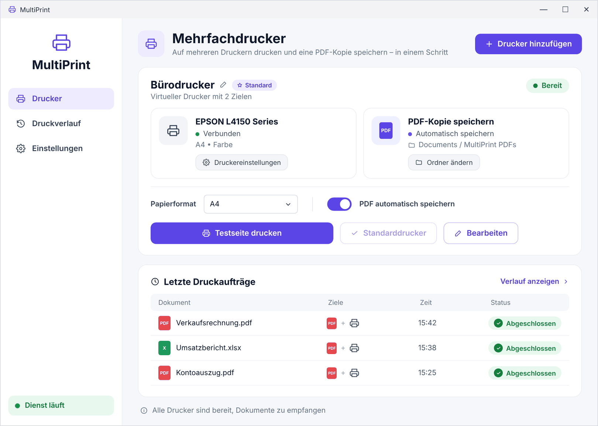

So drucken Sie in Windows gleichzeitig auf zwei Druckern
Windows sendet jeden Druckauftrag nur an einen Drucker. Diese Anleitung zeigt, wie Sie dasselbe Dokument in etwa einer Minute auf zwei oder mehr Druckern gleichzeitig drucken und automatisch eine PDF-Kopie speichern.
Warum Windows das standardmäßig nicht kann
Beim Drucken übergibt Windows den Auftrag genau einem Drucker. Eine integrierte Einstellung zum Duplizieren gibt es nicht.
Oft wird der „Druckerpool“ in den Druckereigenschaften empfohlen. Er sendet jeden Auftrag jedoch an den ersten freien Drucker – nicht an alle.
Zweimal drucken funktioniert, ist aber langsam und fehleranfällig, besonders bei Rechnungen, die auf Papier und als PDF im Archiv benötigt werden.
Mit MultiPrint auf mehreren Druckern drucken
MultiPrint herunterladen
Laden Sie die kostenlose App für Windows 10 oder 11 herunter, entpacken Sie sie und starten Sie MultiPrint.exe. Bestätigen Sie einmalig die Administratorabfrage.
Mehrfachdrucker anlegen
Klicken Sie auf „Drucker hinzufügen“ und vergeben Sie einen Namen, z. B. „Rechnungen“.
Drucker auswählen
Wählen Sie zwei oder mehr Drucker. Fügen Sie „Microsoft Print to PDF“ hinzu, wenn Sie auch eine PDF-Kopie möchten.
PDF-Ordner festlegen
Bei PDF wählen Sie einen Ordner und optional ein Dateinamen-Präfix. Die Dateien werden dort automatisch gespeichert.
Aus jeder Anwendung drucken
Wählen Sie in Word, Excel, im Browser oder in der Buchhaltung den neuen Drucker aus.
Verlauf prüfen
Jedes Dokument erscheint im Druckverlauf mit allen Zielen und deren Ergebnis.

Gleichzeitig drucken und als PDF speichern
Wählen Sie einen echten Drucker und „Microsoft Print to PDF“. Sie erhalten den Ausdruck und eine PDF-Datei wie Rechnung_2026-11-02_15-45-00.pdf im gewählten Ordner – ohne „Speichern unter“.
Häufige Fragen
Kann Windows ohne Zusatzsoftware auf zwei Druckern gleichzeitig drucken?
Nein. Windows sendet einen Auftrag an einen Drucker; ein Druckerpool verteilt Aufträge nur und druckt nicht auf allen.
Funktioniert es mit Netzwerk- und USB-Druckern?
Ja. Jeder in Windows installierte Drucker funktioniert, auch Netzwerk-, USB- und Bondrucker.
Kann ich das Papierformat festlegen?
Jeder Mehrfachdrucker hat eine Formateinstellung (A4, A3, A5, Letter, Legal oder automatisch). Weitere Einstellungen kommen vom jeweiligen Drucker.
Ist es kostenlos?
Ja. MultiPrint ist kostenlos und Open Source unter der MIT-Lizenz.